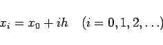

Inhalt Index DeskTop Bronstein

 Numerische Mathematik Integration gewöhnlicher Differentialgleichungen
Numerische Mathematik Integration gewöhnlicher Differentialgleichungen


Das Prinzip der im folgenden dargestellten Verfahren zur Lösung der Anfangswertaufgabe
besteht darin, für die gesuchte Funktion y(x) an ausgewählten Stützstellen xi Näherungswerte yi zu ermitteln. In der Regel werden äquidistante Stützstellen mit der vorgegebenen Schrittweite h verwendet:
|  | (19.94) |